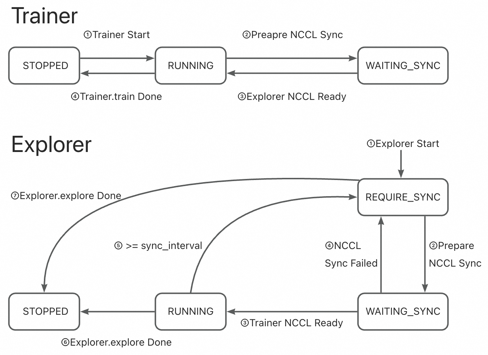
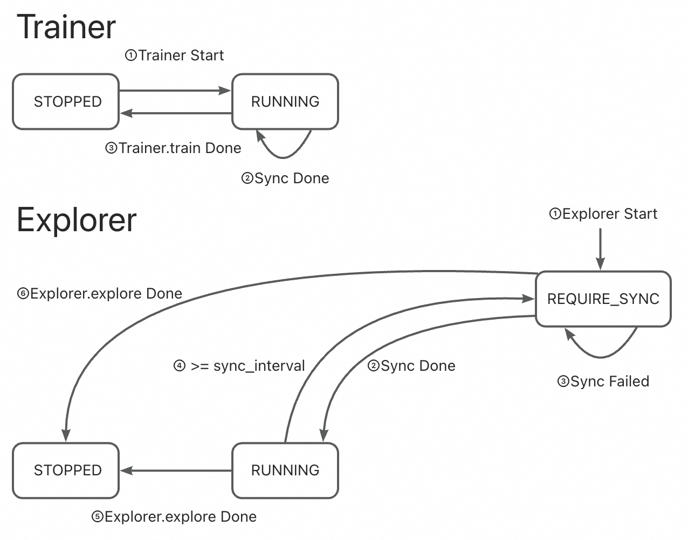

Synchronizer in Trinity-RFT#
The Synchronizer is the central coordination module in Trinity-RFT, designed to keep the Trainer and Explorer components in sync when training reinforcement learning models in a distributed environment. Its main purpose is to ensure that both components are always working with up-to-date model weights, enabling efficient and stable learning.
Think of it like a traffic controller: it manages when and how the Explorer (which collects experience from the environment) updates its policy based on the latest model improvements made by the Trainer. Without this coordination, the system could become inefficient or even unstable due to outdated or conflicting model versions.
How It Works: The Big Picture#
In Trinity-RFT:
The Trainer learns from collected data and updates the model.
The Explorer uses the current model to interact with the environment and generate new data.
The Synchronizer ensures these two stay aligned by managing when and how the Explorer gets the latest model weights.
To achieve this, the Synchronizer:
Monitors the state of both Trainer and Explorer.
Decides when synchronization should occur.
Coordinates the transfer of model weights using one of several strategies.
Inside the Trainer#
async def train(self) -> str:
while self.train_step_num < self.total_steps:
try:
# sample may be blocked due to explorer does not generate enough data
self.logger.info(f"Sample data for step {self.train_step_num + 1} started.")
sample_task = asyncio.create_task(self._sample_data())
while not sample_task.done():
# sync weight to make sure the explorer can continue to explore and generate enough data
if await self.need_sync():
# Currently, we do not record the metrics of sync_weight here
await self.sync_weight()
await asyncio.sleep(1)
exps, metrics, repr_samples = await sample_task
self.logger.info(f"Sample data for step {self.train_step_num + 1} finished.")
metrics.update(await self.train_step(exps))
if await self.need_sync():
metrics.update(await self.sync_weight())
# ...
self.monitor.log(metrics, self.train_step_num)
except StopAsyncIteration:
self.logger.info("No more samples to train. Stopping training.")
break
except Exception:
self.logger.error(f"Error in Trainer:\n{traceback.format_exc()}")
break
The Trainer checks whether synchronization is needed:
During data collection in training.
After completing each training step.
If so, it triggers sync_weight() through the Synchronizer.
Inside the Explorer#
async def explore(self) -> str:
while True:
try:
self.logger.info(f"Explore step {self.explore_step_num + 1} started.")
explore_continue = await self.explore_step()
if not explore_continue:
break
if self.need_eval():
await self.eval()
if await self.need_sync():
await self.sync_weight() # Request latest weights via Synchronizer
except Exception:
self.logger.error(f"Error in Explorer: {traceback.format_exc()}")
break
The Explorer checks for synchronization:
After finishing an exploration step.
Before starting the next round of data collection.
This ensures it always uses a recent version of the model to generate high-quality experiences.
✅ Key Insight: Both Trainer and Explorer consult the Synchronizer regularly. This forms a tight feedback loop, keeping training and exploration in sync.
Synchronization Styles: When Does Sync Happen?#
There are two synchronization styles that define when the Explorer requests updated weights.
1. SyncStyle.FIXED – Regular Intervals#
Synchronization happens every fixed number of steps.
Configured with
sync_intervalandsync_offset.
Example |
Behavior |
|---|---|
|
Sync every 10 steps (both start together) |
|
Explorer runs 5 steps first, then sync every 10 steps |
✅ Best for: Simple, predictable environments where exploration steps are short and rewards are frequent (e.g., mathematical reasoning tasks).
🔁 Think of it as a metronome — steady and regular.
2. SyncStyle.DYNAMIC_BY_EXPLORER – Demand-Driven Sync#
Explorer decides to request a sync after generating a certain amount of data.
It tells Synchronizer: “I’m ready for a new model!”
Trainer checks this request during its normal loop and responds accordingly.
📌 Process Flow:
Explorer finishes
Nsteps → sets state toREQUIRE_SYNC.Waits for Trainer to acknowledge and perform sync.
Once synced, returns to
RUNNING.If timeout occurs, retries on next step.
✅ Best for: Complex, long-horizon tasks where data generation is expensive or variable (e.g., multi-turn dialogue, game playing).
🔄 More flexible — adapts to actual data throughput.
State Management: What’s Going On Behind the Scenes?#
The Synchronizer tracks the state of both Trainer and Explorer to manage synchronization safely.
Four Key States#
State |
Meaning |
|---|---|
|
Component has stopped working |
|
Actively training or exploring |
|
Explorer wants new weights |
|
Explorer or Trainer is waiting synchronization (used in NCCL mode) |
These states help prevent race conditions and ensure smooth coordination.
State Transitions by Style & Method#
🔹 Fixed Style + NCCL Sync#
Synchronizer schedules sync every
Nsteps.Both sides pause briefly for direct GPU sync.
The state of the trainer toggles predictably between
RUNNING↔WAITING_SYNC, and the state of the explorer toggles amongRUNNING→REQUIRE_SYNC→WAITING_SYNC.

🔹 Fixed Style + CHECKPOINT/MEMORY#
Trainer saves or sends weights periodically.
Explorer checks at each interval and pulls updates.
The state of the trainer remains at
RUNNING, and the state of the explorer toggles betweenRUNNING↔REQUIRE_SYNC.

🔹 Dynamic Style + NCCL#
Explorer signals
REQUIRE_SYNCafter enough data.Trainer sees the signal and initiates NCCL sync.
The state of the trainer toggles predictably between
RUNNING↔WAITING_SYNC, and the state of the explorer toggles betweenRUNNING→REQUIRE_SYNC→WAITING_SYNC.

🔹 Dynamic Style + CHECKPOINT/MEMORY#
Explorer signals
REQUIRE_SYNCafter enough data.Trainer sees the signal and pushes weights to synchronizer.
The state of the trainer remains at
RUNNING, and the state of the explorer toggles betweenRUNNING↔REQUIRE_SYNC.

Frequently Asked Questions (FAQ)#
Q1: Which synchronization method should I choose?#
Scenario |
Recommended Method |
|---|---|
Multi-GPU clusters with high-speed interconnect setups |
|
Multi-node cluster, fast memory/network |
|
Multi-node, slow disk or unreliable network |
|
Maximum compatibility (cross-platform) |
|
✅ Rule of thumb: Use
NCCLif possible. Fall back toMEMORYorCHECKPOINTbased on infrastructure.
Q2: Which synchronization style is better?#
Use Case |
Recommended Style |
|---|---|
Short episodes, quick feedback (e.g., math QA) |
|
Long interactions, delayed rewards (e.g., games, conversations) |
|
💡
DYNAMIC_BY_EXPLORERgives more control to the data-generating side, making it better for unbalanced or variable workloads.
Summary: Key Takeaways#
Feature |
Why It Matters |
|---|---|
Central Coordination |
Ensures Trainer and Explorer use consistent model weights |
Multiple Sync Methods |
Adaptable to different hardware and deployment needs |
Flexible Sync Styles |
Supports both periodic and demand-driven updates |
Robust State Management |
Prevents conflicts and ensures reliability |
Closed-Loop Design |
Enables stable, efficient distributed RL training |
🎯 Bottom Line: The Synchronizer makes distributed reinforcement learning scalable, efficient, and reliable by intelligently managing when and how model updates flow between training and exploration.
Properly configuring the Synchronizer is key to an efficient and stable RL pipeline.